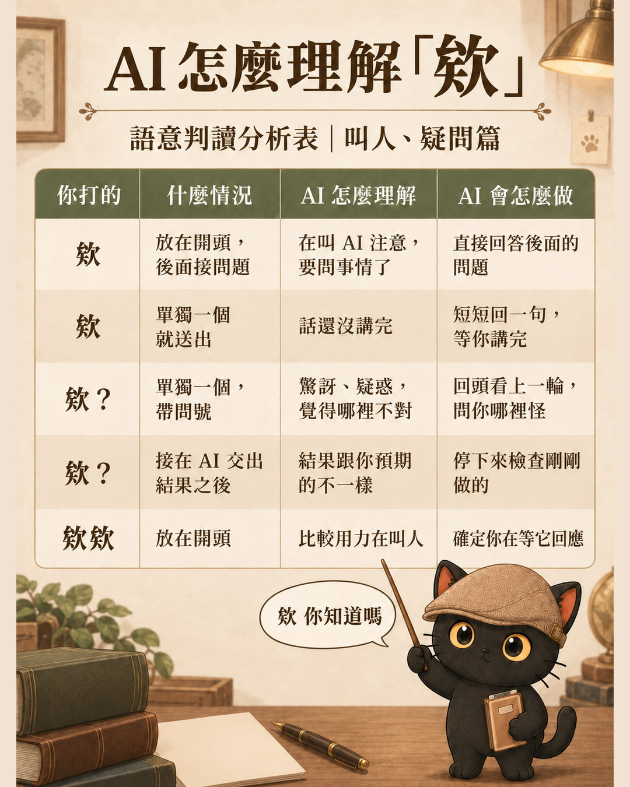
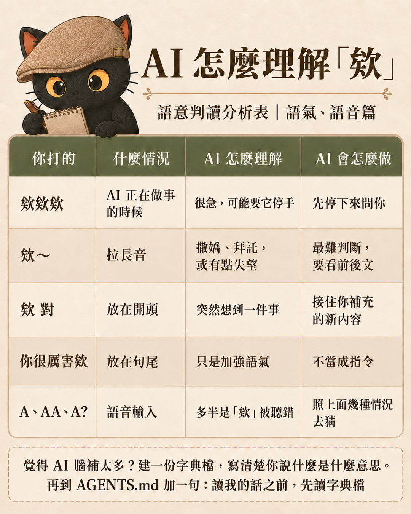
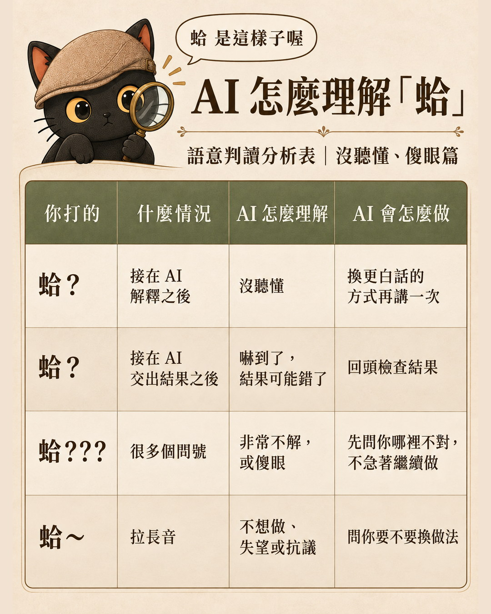
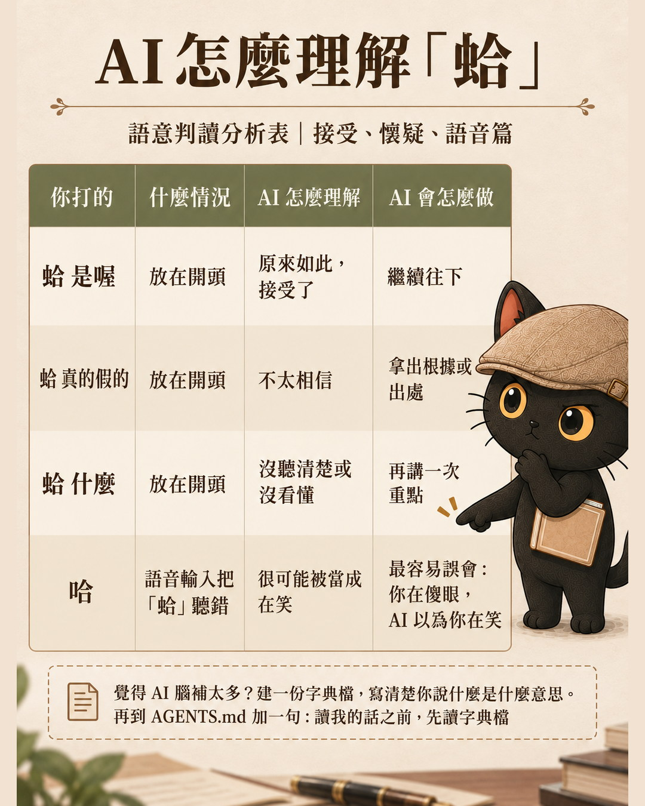

台灣人跟 AI 講話，很常只打一個「欸」或「蛤」。現在的 AI 大多猜得到你的意思，因為它會看這個字放在哪裡、前後接什麼。這篇把常見情況整理成兩張對照表；如果你覺得 AI 腦補太多，或你自己的說法眉角太多，最後教你用一份字典檔加一行 AGENTS.md 解決。
- 跟 AI 講話很愛打「欸」「蛤」，好奇它到底有沒有懂
- 打了「蛤？」，AI 卻自顧自繼續做，你只好再打一長串解釋
- 常用語音輸入，「蛤」被聽成「哈」，AI 以為你在笑
- 同時用好幾家 AI，不想每換一家就重新教一次
- 「欸」10 種、「蛤」8 種情況的對照表：AI 怎麼理解、會怎麼做
- 一份口語字典檔的寫法範例，直接改成你自己的版本
- 一行加進 AGENTS.md 的句子，讓會讀這份規則檔的 AI 開工前先讀你的字典
AI 判斷「欸」，看的是位置和後面接什麼
AI 懂「欸」，靠的是訓練時學到的大量語言用法。它判斷的依據是情境：放在開頭還是句尾、有沒有問號、接在它交出結果之後還是你提問之前。
下面是常見的判讀方式。實際反應會因模型和前後文不同，當參考就好。
| 你打的 | 什麼情況 | AI 怎麼理解 | AI 會怎麼做 |
|---|---|---|---|
| 欸 | 放在開頭，後面接問題 | 在叫 AI 注意，要問事情了 | 直接回答後面的問題 |
| 欸 | 單獨一個就送出 | 話還沒講完 | 短短回一句，等你講完 |
| 欸？ | 單獨一個，帶問號 | 驚訝、疑惑，覺得哪裡不對 | 回頭看上一輪，問你哪裡怪 |
| 欸？ | 接在 AI 交出結果之後 | 結果跟你預期的不一樣 | 停下來檢查剛剛做的 |
| 欸欸 | 放在開頭 | 比較用力在叫人 | 確定你在等它回應 |
| 欸欸欸 | AI 正在做事的時候 | 很急，可能要它停手 | 先停下來問你 |
| 欸～ | 拉長音 | 撒嬌、拜託，或有點失望 | 最難判斷，要看前後文 |
| 欸 對 | 放在開頭 | 突然想到一件事 | 接住你補充的新內容 |
| 你很厲害欸 | 放在句尾 | 只是加強語氣 | 不當成指令 |
| A、AA、A? | 語音輸入 | 多半是「欸」被聽錯 | 照上面幾種情況去猜 |


- 提示詞模板為什麼時好時壞？先懂 AI 是強一億倍的手機輸入法 這篇列出 AI 怎麼判讀「欸」，那篇講 AI 為什麼是靠詞語之間的關聯在猜你的意思
AI 判斷「蛤」，看的是你在什麼時候回
「蛤」比「欸」更依賴時機。同樣是「蛤？」，接在 AI 解釋之後是沒聽懂，接在 AI 交出結果之後是嚇到了。
| 你打的 | 什麼情況 | AI 怎麼理解 | AI 會怎麼做 |
|---|---|---|---|
| 蛤？ | 接在 AI 解釋之後 | 沒聽懂 | 換更白話的方式再講一次 |
| 蛤？ | 接在 AI 交出結果之後 | 嚇到了，結果可能錯了 | 回頭檢查結果 |
| 蛤??? | 很多個問號 | 非常不解，或傻眼 | 先問你哪裡不對，不急著繼續做 |
| 蛤～ | 拉長音 | 不想做、失望或抗議 | 問你要不要換做法 |
| 蛤 是喔 | 放在開頭 | 原來如此，接受了 | 繼續往下 |
| 蛤 真的假的 | 放在開頭 | 不太相信 | 拿出根據或出處 |
| 蛤 什麼 | 放在開頭 | 沒聽清楚或沒看懂 | 再講一次重點 |
| 哈 | 語音輸入把「蛤」聽錯 | 很可能被當成在笑 | 最容易誤會：你在傻眼，AI 以為你在笑 |


AI 腦補太多時，用一份口語字典檔講清楚你的意思
大部分時候，上面這些 AI 自己就猜得到。會出問題的通常是兩種情況：
- 它腦補太多：你只是隨口一個「欸」，它卻停下來道歉、重做。
- 你自己的眉角太多：同一個字，你有固定的用法，跟一般人不一樣。
這時候不用每次解釋，建一份字典檔就好。做法是開一個純文字檔，例如「我的口語字典.md」，跟 AGENTS.md 放在同一個資料夾。下面是範例，請改成你自己的意思：
# 我的口語字典
欸欸欸 ＝ 馬上停手，先不要繼續做
蛤？ ＝ 我沒聽懂，請用國中生聽得懂的話重講
蛤～ ＝ 我不想照這個做法，給我別的選項
哈 ＝ 如果是語音輸入，多半是「蛤」，不是在笑
寫法只有一個原則：左邊寫你會打的字，右邊寫你希望 AI 怎麼做。寫「怎麼做」比寫「什麼情緒」好用，AI 照著做就對了。
- 我跟 AI 說「很煩」，它自己去加了一道機制 這篇只示範口頭禪「欸」「蛤」的字典，那篇講怎麼請 AI 幫你撈出該定義的模糊詞，以及三行條目格式
在 AGENTS.md 加一行，讓 AI 開工前先讀你的口語字典
AGENTS.md 是給 AI 工具在開工前讀的規則檔。有些工具（例如 Codex）會直接讀，其他工具要另外設定，下面有對照表。在裡面加一句：
讀我的話之前，先讀字典檔：我的口語字典.md
字典檔跟 AGENTS.md 放同一個資料夾，這裡直接寫檔名就好。這樣換到另一個會讀這份規則檔的 AI，它就會先讀你的字典，再來理解你的話。
要注意，每家工具讀的檔不一樣：
| 工具 | 讀哪個檔、怎麼接上字典 |
|---|---|
| Codex | 直接讀 AGENTS.md |
| Claude Code | 讀 CLAUDE.md，在裡面寫一行請它去讀 AGENTS.md |
| Gemini CLI | 要在設定裡指定讀 AGENTS.md |
| ChatGPT、Gemini 網頁版 | 沒有這個檔，把字典內容貼進自訂指令或專案說明 |
用之前先確認你的工具讀哪一個檔。
- 換了另一家 AI，技能包要怎麼搬？：交接指令，難的是決定不寫什麼 這篇只處理口語字典怎麼讓不同工具都讀到，那篇講把整套工作交給另一家 AI 時，交接指令該寫什麼、不寫什麼
不只「欸」和「蛤」：規矩寫一次，每個新的 Agent 都套上去
這篇說的 AI，指的是會幫你做事的 Agent，例如 Codex、Claude Code、Claude Cowork，還有最近很熱門的雲端 Agent，例如 dots、Grok Bot、Meta 的 Muse、Manus。
其實不需要一個一個 Agent 去調教、去教它。把自己的字典寫好，把自己的規矩寫好，每次有一個新的 Agent，就把這份規矩套上去。
今天只是簡單示範語氣的部分，也就是「欸」跟「蛤」。可以寫進去的不只這些：
- 你做事的規矩
- 你的自我介紹
- 你的領域、你的專業內容
你想讓 AI 了解你、認識你，甚至記住你的規矩，全部都可以寫進去。
重點整理：AI 看得懂欸和蛤，眉角多才需要字典檔
- AI 大多看得懂「欸」「蛤」，它看的是位置、問號、前後接什麼
- 覺得它腦補太多，或你的用法很特別，就建一份字典檔
- 在 AGENTS.md 加一句「讀我的話之前，先讀字典檔」，換到同樣讀這份檔的 AI 也不用重教
- 語氣只是示範，規矩、自我介紹、專業領域都能寫進去，每個新的 Agent 套上同一份
這篇提到過的
- 提示詞模板為什麼時好時壞？先懂 AI 是強一億倍的手機輸入法 想知道 AI 為什麼看前後文就猜得到你的口頭禪，從這篇開始
- 我跟 AI 說「很煩」，它自己去加了一道機制 口語字典寫完幾條之後，想把更多模糊詞也定義清楚，接著看這篇
- 換了另一家 AI，技能包要怎麼搬？：交接指令，難的是決定不寫什麼 要把整套工作換到另一家 AI 時看這篇
再往後延伸
- AI 規則檔裝了攔截器，52 天一條都沒擋下來｜AGENTS.md 優化，36,000 字的主檔瘦回 26,000 往後一步：AGENTS.md 越加越多之後，主檔要怎麼瘦回來
我是江江教練
隱性知識提煉師、AI 應用規劃師
對 AI × 知識管理、隱性知識提煉有興趣？歡迎加入我的 LINE 社群。我每月固定舉辦兩場免費線上講座，分享實戰經驗與方法論。如果你對這些主題感興趣，想持續學習，或是有顧問需求，都歡迎先從社群開始。
主要討論：
- 善用 AI 作為思考夥伴，提升決策品質與思考深度。
- 把知識、經驗，整理成提示詞、技能包、知識庫，讓 AI 能靈活運用。
每個月兩場免費講座。